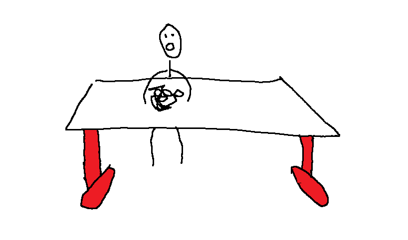

Zevidu Brendon 8.C-s diák lett kihúzva történelem órán felelőnek
Zevidu Brendon 8.C-s diák lett kihúzva felelőnek történelem órán. A felelés megkezdése helyett Zevidu kegyelemként egy 1-est kért, amit nem kapott meg. Mint kiderült, Zevidu az ezt megelőző órán semmit sem írt, így még a füzetét sem adhatta oda a feleléshez. Koszinusz azt feltételezte, hogy Zevidu azért nem írt, mert a füzete nem fért be a táskájába az RGB-s gémer egér doboza miatt, amit Zevidu minden nap hoz.
Zevidu Brendon 8.C-s diák nem csinált angol prezentációt
Mint ma kiderült, Zevidu múlt héten megígérte, hogy mára pótolja a prezentáció elkészítését, amit ezen az órán kellett előadni, de ez nem történt meg. Szorgalmassága egy 1-essel jutalmazódott. Ismét megkérdeztük Koszinuszt, mit gondol, erre ő azt válaszolta, hogy nem tudja, mért nem csinálta meg Zevidu a prezentációt, hiszen a prezentáció elkészítése semmiben nem gátolja a gémer egér sértetlen szállítását. Azt mondta, az egyetlen ok, amiért Zevidu nem csinálhatott prezentációt, az az lehet, hogy nem akarta elkoptatni az asztalon a gémer egér alját.